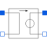

H_CCVLinear current-controlled voltage source |

|
Information
This information is part of the Modelica Standard Library maintained by the Modelica Association.
The linear current-controlled voltage source is a TwoPort. The "right" port voltage at pin 2 (=p2.v) is controlled by the "left" port current at pin p1(=p1.i) via
p2.v = p1.i * transResistance.
The controlling port voltage is zero. Any transResistance can be chosen.
The corresponding SPICE description
Hname N+ N- VNAM VALUE
is translated to Modelica:
Hname -> Spice3.Basic.H_CCV Hname
(Hname is the name of the Modelica instance)
N+ -> p2.v
N- -> n2.v
The voltage source VNAM has the two nodes NV+ and NV-:
VNAM VN+ VN- VALUE_V
The current through VNAM hast to be led through the CCV.
Therefore VNAM has to be disconnected and an additional
node NV_AD has to be added.
NV_AD -> p1.i
NV- -> n1.i
On this way the current, that flows through the voltage source VNAM, flows through the CCV.
VALUE -> transResistance
Parameters (1)
| transResistance |
Value: Type: Resistance (Ω) Description: Transresistance |
|---|
Connectors (4)
| p1 |
Type: PositivePin Description: Positive pin of the controlling port |
|
|---|---|---|
| n1 |
Type: NegativePin Description: Negative pin of the controlling port |
|
| p2 |
Type: PositivePin Description: Positive pin of the controlled port |
|
| n2 |
Type: NegativePin Description: Negative pin of the controlled port |